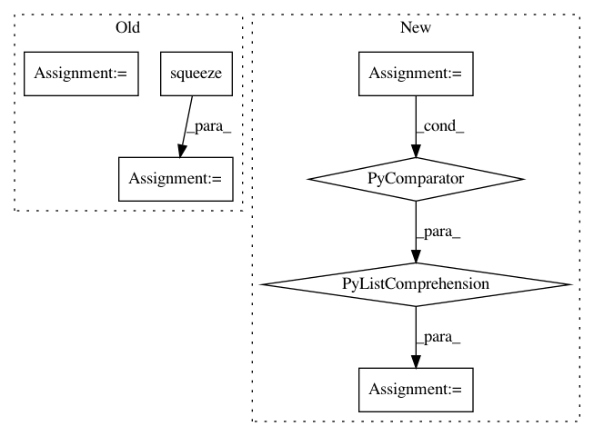

285dc85691241532cd976e04a089f409e44d7493,src/detection/tensor/detector.py,Detector,detect_multiple,#Detector#Any#,40
Before Change
answers = []
for image in image_array_list:
predictions = self.sess.run(softmax_tensor, {"DecodeJpeg:0": image})
predictions = np.squeeze(predictions)
answer = {}
for node_id in range(len(predictions)):
answer[self.labels[node_id]] = predictions[node_id]
answers.append(answer)
return answers
@staticmethod
After Change
with tf.device("/gpu:0"):
softmax_tensor = self.sess.graph.get_tensor_by_name("final_result:0")
threads = [pool.apply_async(operation, args=(self.sess, softmax_tensor, image_array_list[i],)) for i in
range(10)]
results = []
for x in threads:
results.append(x.get())
In pattern: SUPERPATTERN
Frequency: 3
Non-data size: 7
Instances
Project Name: geometalab/OSMDeepOD
Commit Name: 285dc85691241532cd976e04a089f409e44d7493
Time: 2016-08-12
Author: samuel.kurath@gmail.com
File Name: src/detection/tensor/detector.py
Class Name: Detector
Method Name: detect_multiple
Project Name: GPflow/GPflow
Commit Name: bd1e9c04b48dd5ccca9619d5eaa2595a358bdb08
Time: 2020-01-31
Author: st--@users.noreply.github.com
File Name: gpflow/kernels/statics.py
Class Name: White
Method Name: K
Project Name: geometalab/OSMDeepOD
Commit Name: 285dc85691241532cd976e04a089f409e44d7493
Time: 2016-08-12
Author: samuel.kurath@gmail.com
File Name: src/detection/tensor/detector.py
Class Name: Detector
Method Name: detect_multiple
Project Name: facebookresearch/Horizon
Commit Name: 16ba3819bbfde4e49711b51ccd357cb92d1de386
Time: 2020-05-21
Author: kittipat@fb.com
File Name: reagent/gym/preprocessors/default_preprocessors.py
Class Name: RecsimObsPreprocessor
Method Name: __call__